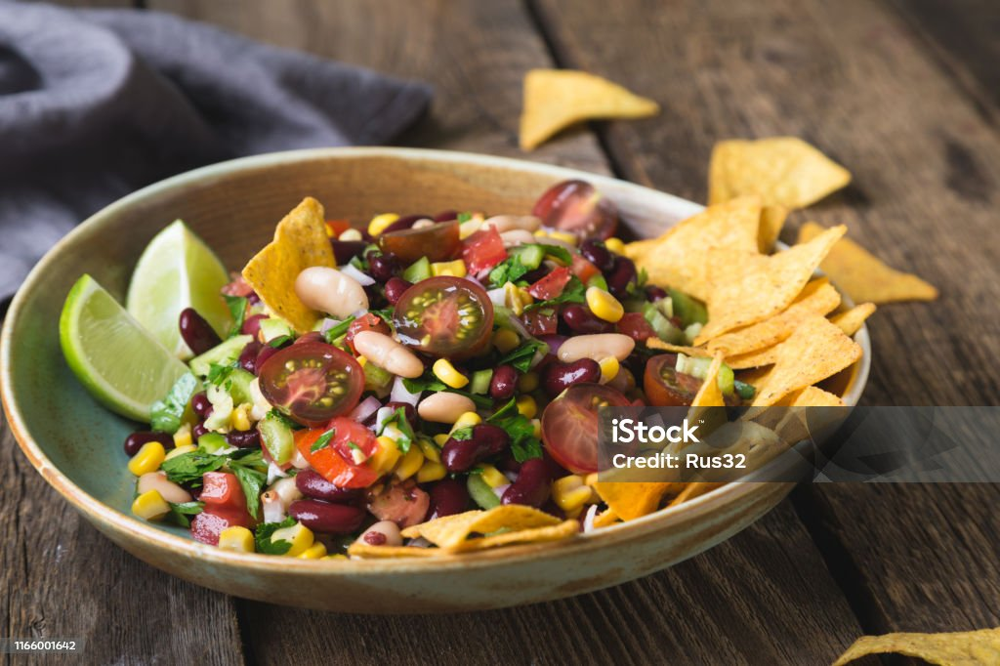

Cowboy Caviar

Description
Cowboy Caviar is a vibrant and colorful dish that has become a favorite in casual dining
and community gatherings alike. Often enjoyed as a dip, salad, or side, it’s known for its refreshing
combination of textures and flavors, a mix of crisp, tangy, and slightly spicy notes that bring a burst of
freshness to any table. Its appeal lies in its versatility; it can be served with chips, as a topping for grilled
meats, or even as a light standalone meal.
With its bold southwestern flair and visually inviting presentation, Cowboy Caviar fits perfectly in menus
that highlight wholesome, feel-good dishes. It’s a go-to option for social events, potlucks, or any
settingthat celebrates comfort and connection through food. The balance of flavor and crunch makes it not
just a dish but a crowd-pleasing experience that embodies community-style dining at its best.
Ingredients
- 1 can black beans, drained and rinsed
- 1 can black-eyed peas, drained and rinsed
- 1 cup corn
- 1 red bell pepper, diced
- 1 green bell pepper, diced
- 1 small red onion, chopped
- 2 tomatoes, diced
- ¼ cup chopped cilantro
- ¼ cup olive oil
- 2 tbsp lime juice
- 1 tsp salt
- ½ tsp black pepper
- ½ tsp garlic powder
- 1 tsp sugar or honey (optional)
- 1 jalapeño, chopped (optional)
- 1 avocado, diced (optional)
Steps
- Drain and rinse the black beans, black-eyed peas, and corn.
- Chop the bell peppers, onion, tomatoes, jalapeño, and cilantro, then add them to a large bowl with the beans and corn.
- In a small bowl, whisk together olive oil, lime juice, salt, pepper, garlic powder, and sugar or honey.
- Pour the dressing over the mixture and toss gently to coat.
- Add diced avocado just before serving, then chill for about 20 minutes for best flavor.
Home